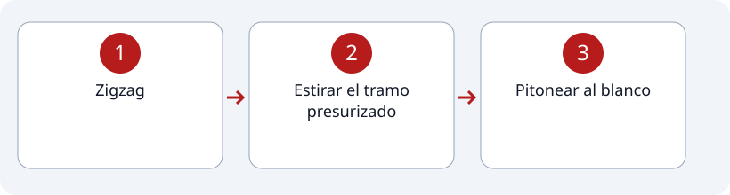

1
Estación #3
Avance con Línea de Ataque Cargada.
Recorrido de la estación

Pasos
2
Estirar el tramo presurizado
3
Pitonear al blanco

Indicaciones
- * Una puerta tipo vaivén permite el paso de la o el competidor.
- * El blanco debe caer ante el golpe del chorro de agua.
- * Mantener la línea de ataque cargada durante todo el avance.
- * El movimiento debe ser fluido desde el zigzag hasta estirar el tramo.